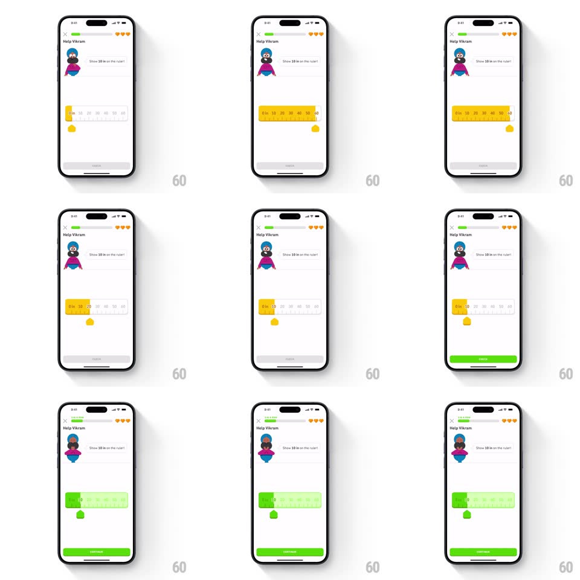

Media
Frame-by-frame

Rebuild this interaction 1:1: Duolingo's ruler math exercise ("Help Vikram - Show 10 on the ruler!") - dragging the yellow thumb fills the ruler's track with a yellow highlight up to the thumb position, and landing on the right value flips the whole ruler into a green success state with a radiating pulse, enabling CONTINUE.

Rebuild this interaction 1:1: Duolingo's ruler math exercise ("Help Vikram - Show 10 on the ruler!") - dragging the yellow thumb fills the ruler's track with a yellow highlight up to the thumb position, and landing on the right value flips the whole ruler into a green success state with a radiating pulse, enabling CONTINUE.
## Integration
Integration: stack-agnostic spec - springs given as stiffness/damping, timed motions as duration + curve; map every value to your framework and animation library of choice.
## Scene
White lesson screen: "Help Vikram" header with progress and hearts, Vikram's speech bubble ("Show 10 on the ruler!"), a large horizontal ruler (0-60 with tick labels), a yellow teardrop thumb below it, and a CHECK/CONTINUE button at the bottom.
## Motion spec
Pattern: fill-tracking slider with success flood.
- Drag: the thumb follows the finger 1:1 horizontally; the ruler track fills yellow from 0 to the thumb position in real time; the thumb's value label updates as it passes ticks, snapping softly to whole numbers (spring ~500/30 per tick, ~80ms).
- Release: the thumb settles on the nearest tick (spring ~380/26, 200ms).
- Correct (10): the yellow fill floods green across the whole ruler (300ms, left to right), a pulse ring radiates from the thumb (scale 1 -> 2.2, fade, 500ms), the thumb flips green, and CHECK becomes CONTINUE (green, 150ms).
- Vikram reacts (small bounce, spring ~340/20).
## Calibration
- The fill always starts at 0 - it reads as a measurement, not a generic progress bar.
- Success is a full-ruler flood, not just a check icon.
## Reduced motion
Fill tracks without tick snapping; success state fades in (200ms).
## Don't miss
- The ruler's numbers and ticks stay visible above the fill - the fill sits behind the markings.
- The pulse radiates once, on success only - not during dragging.